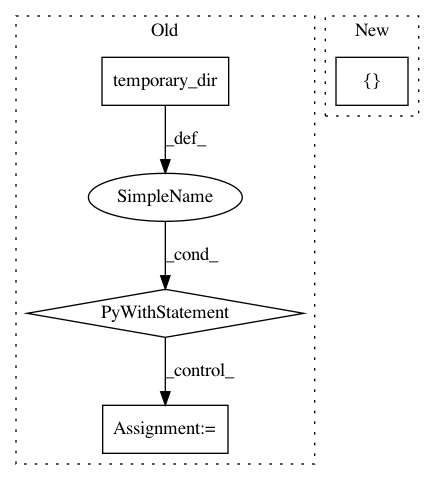

1e8ddb230898452103347759fd9424fd342daf69,tests/python/pants_test/backend/project_info/tasks/resolve_jars_test_mixin.py,ResolveJarsTestMixin,_test_jar_lib_with_url,#ResolveJarsTestMixin#Any#,24
Before Change
targets = ["{0}:{1}".format(os.path.join(source_dir, "src"), name) for name in spec_names]
with temporary_dir() as ivy_temp_dir:
extra_args = ["--ivy-cache-dir={}".format(ivy_temp_dir)]
self.evaluate_subtask(targets, workdir, load_all, extra_args=extra_args,
expected_jars=["org.pantsbuild:synthetic-test-jar:1.2.3"])
def test_jar_lib_with_url_resolve_default(self):
self._test_jar_lib_with_url(False)
def test_jar_lib_with_url_resolve_all(self):
After Change
targets = ["{0}:{1}".format(os.path.join(source_dir, "src"), name) for name in spec_names]
self.evaluate_subtask(targets, workdir, load_all,
extra_args=[],
expected_jars=["org.pantsbuild:synthetic-test-jar:1.2.3"])
def test_jar_lib_with_url_resolve_default(self):
In pattern: SUPERPATTERN
Frequency: 3
Non-data size: 4
Instances
Project Name: pantsbuild/pants
Commit Name: 1e8ddb230898452103347759fd9424fd342daf69
Time: 2019-10-04
Author: 1305167+cosmicexplorer@users.noreply.github.com
File Name: tests/python/pants_test/backend/project_info/tasks/resolve_jars_test_mixin.py
Class Name: ResolveJarsTestMixin
Method Name: _test_jar_lib_with_url
Project Name: pantsbuild/pants
Commit Name: e6fca77674554e516cfb358d1b395986acd3f7e7
Time: 2016-05-02
Author: john.sirois@gmail.com
File Name: tests/python/pants_test/backend/project_info/tasks/test_export.py
Class Name: ExportTest
Method Name: test_preferred_jvm_distributions
Project Name: pantsbuild/pants
Commit Name: f2a35263aacacf10e1b2d622cd39c7c66ea39acb
Time: 2019-11-25
Author: ericarellano@me.com
File Name: src/python/pants/fs/fs_test.py
Class Name: WorkspaceInConsoleRuleTest
Method Name: test